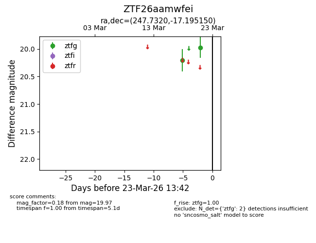
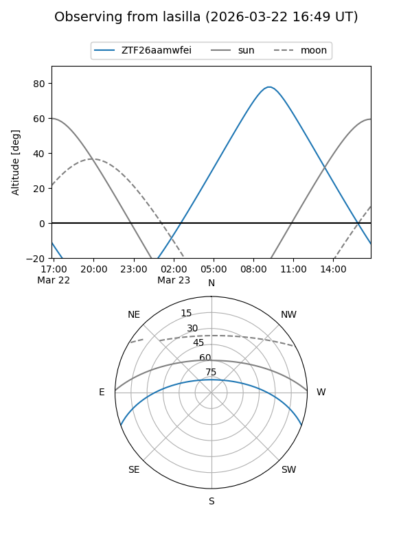
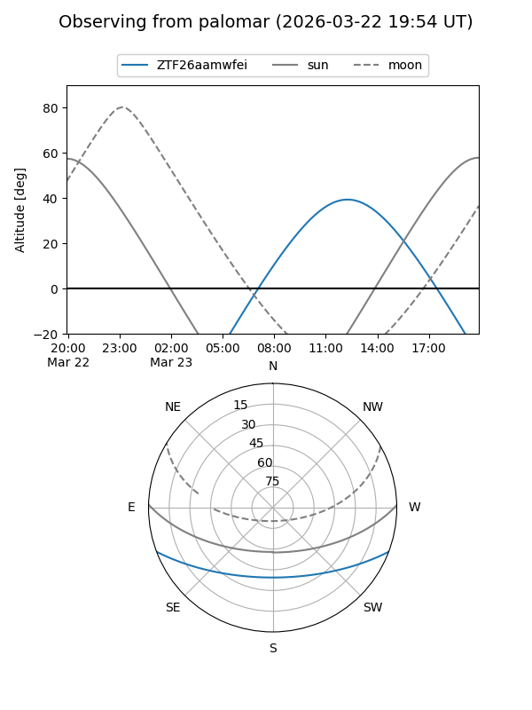

ZTF26aamwfei
Target ZTF26aamwfei at 2026-03-23 13:44
Aliases and brokers:
FINK: link
Lasair: link
ALeRCE: link
alt names
ZTF26aamwfei (ztf,fink_ztf)
Coordinates:
equatorial (ra, dec) = 247.7320,-17.19515
equatorial (HMS+DMS) = 16:30:55.68,-17:11:42.54
galactic (l, b) = (359.6053,+20.75708)
Flags:
Photometry:
last ztfg=19.97
2 ztfg detections
Lightcurve

Visibility


Additional plots